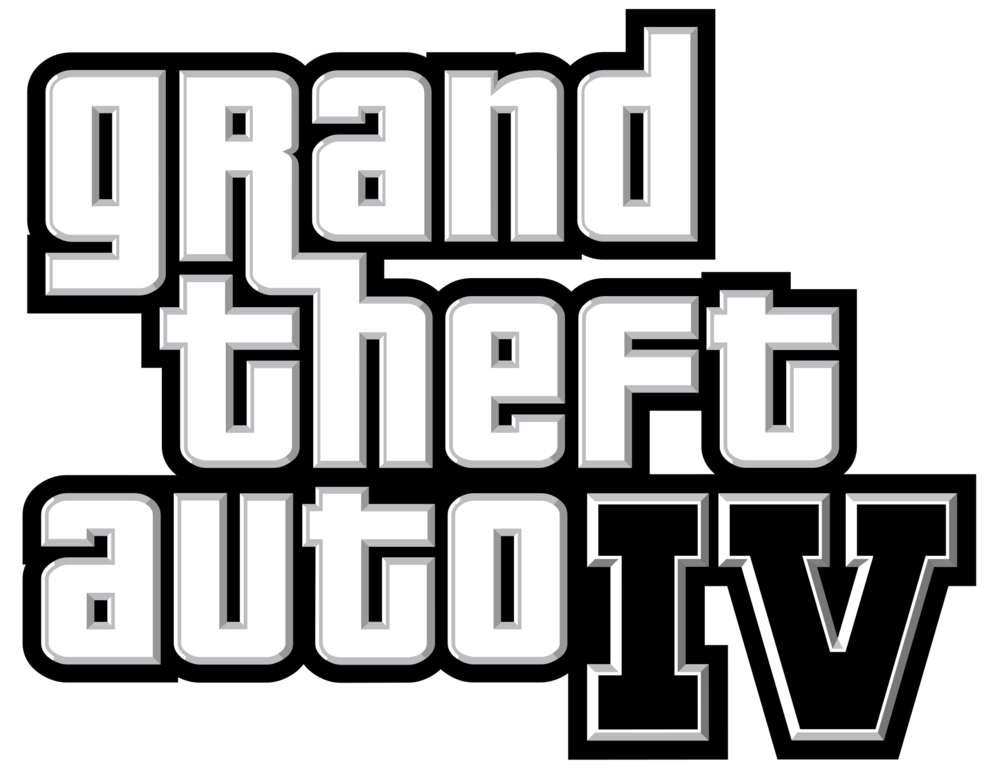

Select A Grand Theft Auto!
Select A Game Down Below!
Summary
"Grand Theft Auto IV" follows the story of Niko Bellic, an immigrant in Liberty City, as he becomes entangled in criminal activities while seeking revenge and pursuing the American Dream. The game features a realistic open-world environment, engaging gameplay mechanics, and a compelling narrative, earning critical acclaim and becoming a landmark title in the gaming industry.
More Detail
"Grand Theft Auto IV" (GTA IV) is set in Liberty City, a fictionalized version of New York City. Players take on the role of Niko Bellic, an Eastern European war veteran who immigrates to the United States to pursue a fresh start and the promise of the American Dream. However, Niko quickly finds himself drawn into the city's criminal underworld as he becomes embroiled in the affairs of various criminal organizations and individuals. The game features a dynamic open-world environment where players can freely explore the city, engage in a wide range of activities, and undertake a variety of missions that progress the main storyline. These missions often involve tasks such as car chases, shootouts, assassinations, and more. One of the key aspects of GTA IV is its deep and engaging narrative, which delves into themes of loyalty, betrayal, and the pursuit of redemption. Niko's journey is filled with complex characters, including his cousin Roman, who constantly gets into trouble, and various criminal figures who offer him work and opportunities for advancement. In addition to the main storyline, GTA IV also includes a robust multiplayer mode, allowing players to compete or cooperate in various game modes and activities, further expanding the game's replayability and longevity. The game received widespread critical acclaim upon its release in 2008, praised for its realistic portrayal of urban life, immersive gameplay mechanics, and compelling storytelling. It is widely regarded as one of the greatest video games of all time and has had a significant influence on the open-world genre and gaming industry as a whole.
Lore of Grand Theft Auto IV
The lore of "Grand Theft Auto IV" (GTA IV) revolves around the protagonist, Niko Bellic, an immigrant from Eastern Europe who arrives in Liberty City, a fictionalized version of New York City, seeking a fresh start. Niko's backstory involves his experiences as a soldier during the Yugoslav Wars, where he witnessed and participated in violent conflicts. Throughout the game, Niko grapples with the trauma of his past and struggles to find his place in the criminal underworld of Liberty City. Upon arriving in Liberty City, Niko reunites with his cousin Roman Bellic, who had previously promised him a life of luxury in America. However, Niko soon discovers that Roman's claims were exaggerated, and Roman is heavily indebted to various criminal figures, including loan sharks and mob bosses. As Niko becomes embroiled in the criminal activities of Liberty City, he encounters a diverse cast of characters, including corrupt politicians, ambitious gangsters, and eccentric criminals. Niko forms alliances and rivalries with these characters as he navigates the city's criminal underworld, taking on jobs ranging from simple thefts to complex heists and assassinations. Central to the lore of GTA IV is the exploration of themes such as betrayal, loyalty, and the pursuit of the American Dream. Niko's journey is marked by moral ambiguity as he confronts the consequences of his actions and grapples with the choices he must make to survive in a city where violence and corruption are rampant. Throughout the game, players uncover various subplots and hidden connections between characters, adding depth to the lore of Liberty City and providing insight into the motivations driving its inhabitants. Overall, the lore of GTA IV is rich and multifaceted, offering players a compelling narrative experience set within a sprawling open-world environment filled with intrigue, danger, and dark humor.
Trailer of Grand Theft Auto IV
Gamplay of Grand Theft Auto IV